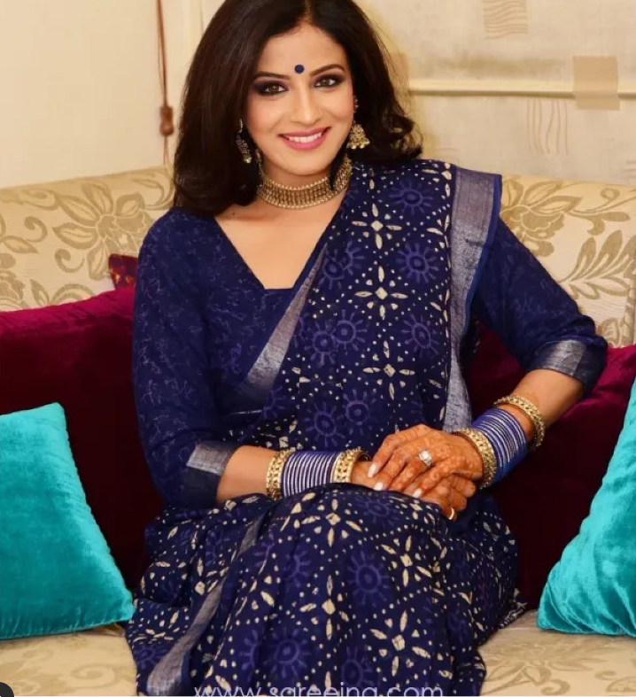

At Lotus, we specialize in designer sarees, custom-made blouses and other costumes, and any sort of ceremonial ensemble for women and kids and Men. At a glance, it is a boutique store with a great collection of designer attire. The difference is that most of the clothes we make are inspired by our nation's rich heritage of art and craft. We blend these heritage-inspired designs with the finest fabrics (such as Banaras silk and Kanchipuram silk) and shape them according to the customer's needs. Thanks to our exceptional team of designers, embroidery / cutwork specialists and other supporting staff, the Lotus creations have already succeeded in setting a noble trend in the ceremonial.
Since its inception in 2015, High Street Essentials Pvt. Ltd., has emerged as one of India's leading omnichannel fashion houses. Spearheaded by two powerhouse women-Nivetha, the company has uniquely positioned itself as the 360-degree solution to all urban women's fashion needs. All brands have an inimitable style signature and are attuned to the women of today.
Indya's design philosophy is centered on the contemporary global woman who wants her Indian Wear wardrobe to not only be stylish but also affordable, functional, and effortless. Each collection is an ode to our rich Indian culture, and remixed with modern elements injecting every piece with glamour and ease.